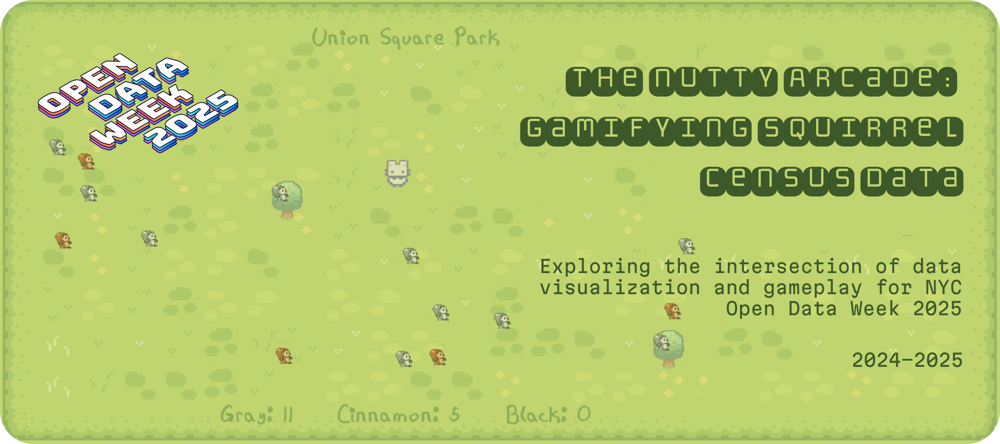
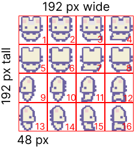
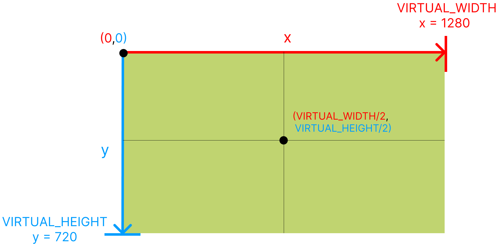
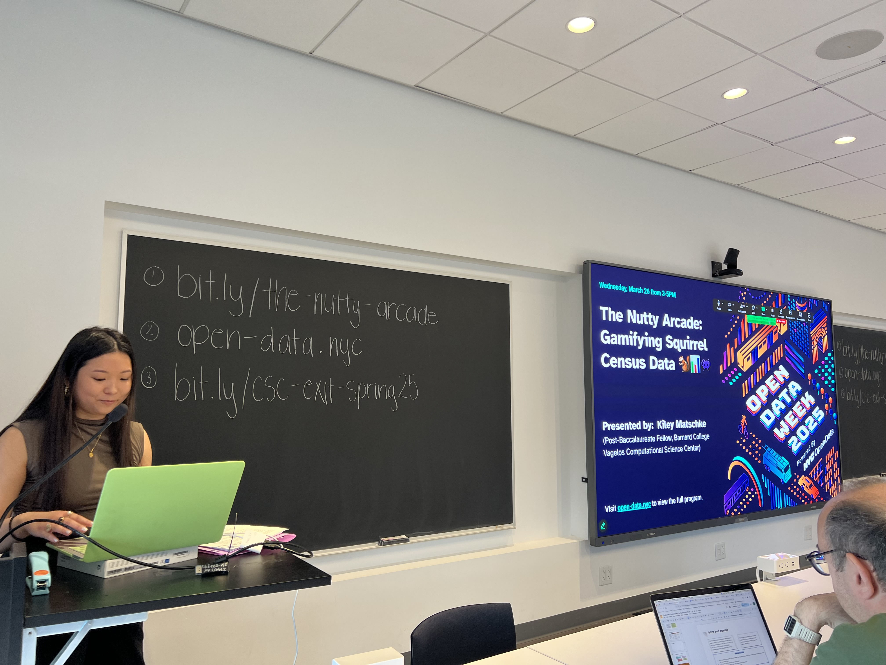

The Nutty
Arcade
View projects in game design, data visualization, mobile applications, & more

Insights
Type
Post-Baccalaureate Project:
Barnard College CSC x
NYC Open Data Week
Timeline
Oct 2024 - Mar 2025
Team
Kiley Matschke
GitHub
View the full project documentation here.
About
NYC Open Data Week is an annual festival of
community-driven events across all five
boroughs, organized and produced by the NYC
Open Data Team at the Office of Technology
and Innovation (OTI), BetaNYC, and Data
Through Design. This festival recognizes
the anniversary of NYC's first open data law,
signed in March 2012, and serves as a powerful
reminder of our communities' interconnectedness.
This workshop explores the intersection
of data visualization and gameplay using
real NYC squirrel census data from The Squirrel Census.
Participants learn how to use programming language
Lua with the game engine LÖVE to work creatively with
data through the lens of game design principles.
Process
I developed this project over several months, reaching checkpoints along the way:
- Brainstorm
- Submit a proposal
- Develop materials
- Deliver workshop
Typefaces
Hipchick.ttf: Park names and squirrel counts
Sprite Sheets



Cinnamon squirrels: SunnyLand Woods asset pack
I used Figma to create the monochromatic versions.
Player + environment: Sprout Land asset pack
Coordinate plane: Representative of the format of a typical coordinate plane in 2D games. The origin sits at the top left corner, and the y values increase as you move down the screen.
Soundtrack
"cozy animal crossing music" playlist by stellarsheik
Reflection
Building this gamified data visualization was an incredible exercise in taking the skills
I learned from independent research and applying them to a real-world scenario. I was able to
fuse aspects of design and tech as I developed the program, simultaneously broadening my pedagogical and
documentation skills as I generated the workshop.
It was quite interesting to compare my experience with this project to the one I built last year for
Open Data Week 2024 (Jamming with Environmental Data). I found that this year, I had a better sense of how
to best present the information in a way that was accessible, comprehensive, and organized. I also felt
that my material preparation was more concrete, and designing the overall workshop flow came more easily.
At the same time, I encountered new challenges, such as trying to keep the workshop engaging for people
with a range of no coding experience to those at industry level. Since Open Data Week connects data-driven
people from all across NYC, and the CSC primarily hosts introductory events, I found it difficult to manage
contrasting expectations while staying true to the missions of both. To address this, I made sure to check
in with event participants frequently, asking if they needed me to repeat information or troubleshoot.
I also took a temperature check at the beginning of the event to assess how many people actually had any
sort of coding background. Allowing space for questions and feedback throughout the workshop helped me to
identify if my pace was appropriate and if my explanations were clear.
Ultimately, this experience pushed the limits of my comfort zone: I designed a project that challenged me
in terms of what I knew before I started, and I created a corresponding 2-hour workshop that amplified my
public speaking and instructional skills. I was also able to connect (and reconnect) with many folks
involved in NYC data, technology, and innovation, which has ushered in fruitful discourse and networking.
I definitely plan to continue my involvement with this festival in the future. Happy Open Data Week 2025!
🐿️🌳📊👾
Event Photos
